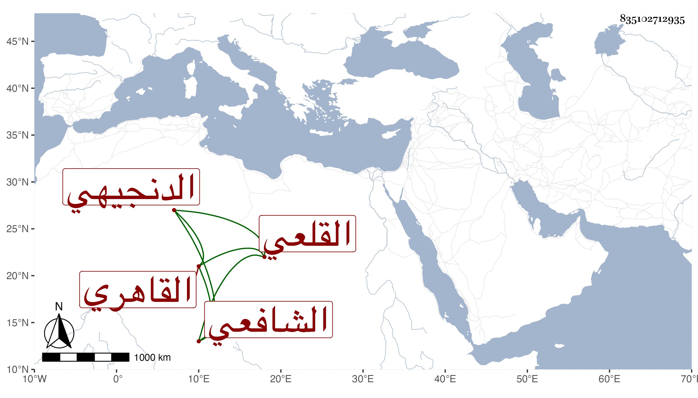

0902Sakhawi.DawLamic.ITO20230111-ara1.EIS1600.835102712935
Biography ID: 835102712935
171
أحمد بن عمر الشهاب الدنجيهي ثم القاهري القلعي الشافعي . مات وقد قارب السبعين أو حازها في يوم الأحد حادي عشر ذي القعدة سنة سبع وسبعين وثمانمائة ، وكان قد نشأ فقيرا بجامع القلعة ثم ترقى حتى صار أحد مؤذنيه ثم رئيسا فيه بحيث رقي في الخطابة بالجلال البلقيني وغيره بل جلس فيه مع الشهود ثم صار شاهد ديوان عليباي الأشرفي ثم كسباي المؤيدي ثم استقر في جملة أئمة القصر بعناية يشبك الفقيه وعمل نقابة أئمته والنيابة في نظر الأوقاف الجارية تحت نظر مقدم المماليك في أيام جوهر النوروزي ثم نيابة الأنظار الزمامية عنه أيضا ، وكان خيرا رحمه الله وإيانا .
